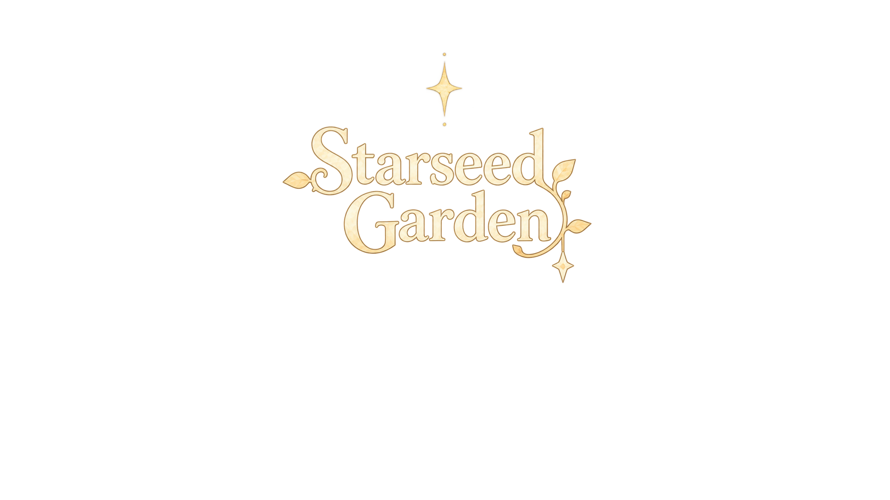
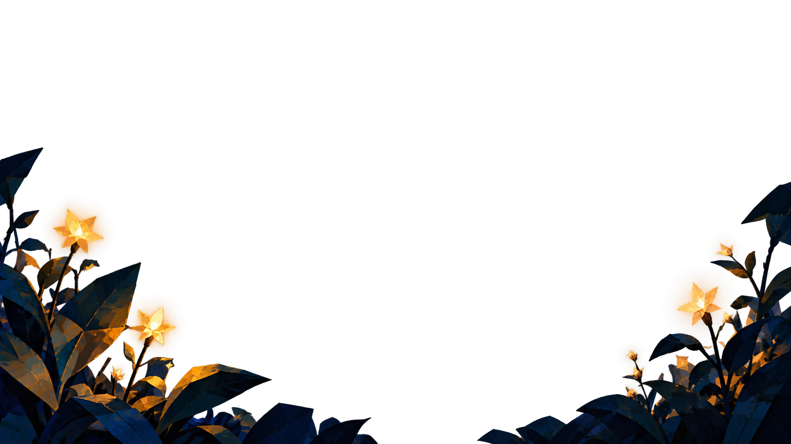

Starseed Garden
2.5D parallax camera prototype
Dev sound
Ambience
Car
Dog
Door
Church bell
Owl
Crickets
Dev chart
Sky search
Ink
In rhythm pulse
Star appears pulse
Glow
Breaks
Brush
Shape
Reveal
Dev sky
Star dots
Sky color
Milky Way
Milky Way edges
Milky Way stars
Twinkle stars
Sky parallax
Constellation
Star reveal
Shooting stars
Stardust trails
Moon halo
High wisps
Settings
Camera
Parallax
Row scroll
Vertical row scroll
Lamp glows (midground)
Window glows (background)
Star glows (nets)
Hint ring
Contact shadows
Cast shadows
Telescope contact shadow
Telescope cast shadow
Character shadow
Telescope view
Sound
Night sky
Fog
City tint
City glow
Ambient FX
Fireflies
Behind the scenes
The scene is a stack of flat layers, like sheets of glass: painted layers (the rooftop props each on their own) plus animated sheets for the mist and the warm street glow. Window and lamp glows, cast shadows, steam, fireflies, motes, the moon's halo and twinkling stars are effects drawn on or between their layers.
When the camera moves, near sheets slide further than distant ones. Your eyes read that difference in speed as depth: this is the parallax effect. The % on each card is how fast it slides compared to the foreground.
Looking up into the sky or swinging the telescope is a turn of the camera, not a move: there every sheet turns together, without parallax, just as a real view does.
Drag to rotate the view · scroll to move closer.
Each card's Parallax slider fine-tunes how fast that layer slides. Save keeps them in this browser.



